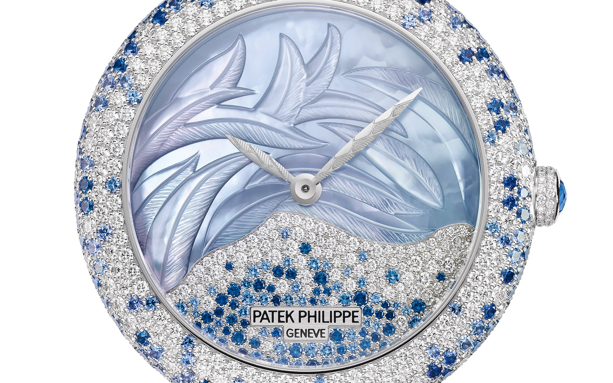
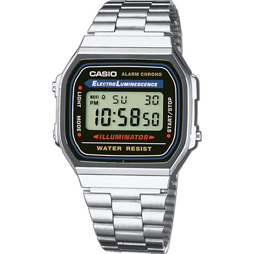
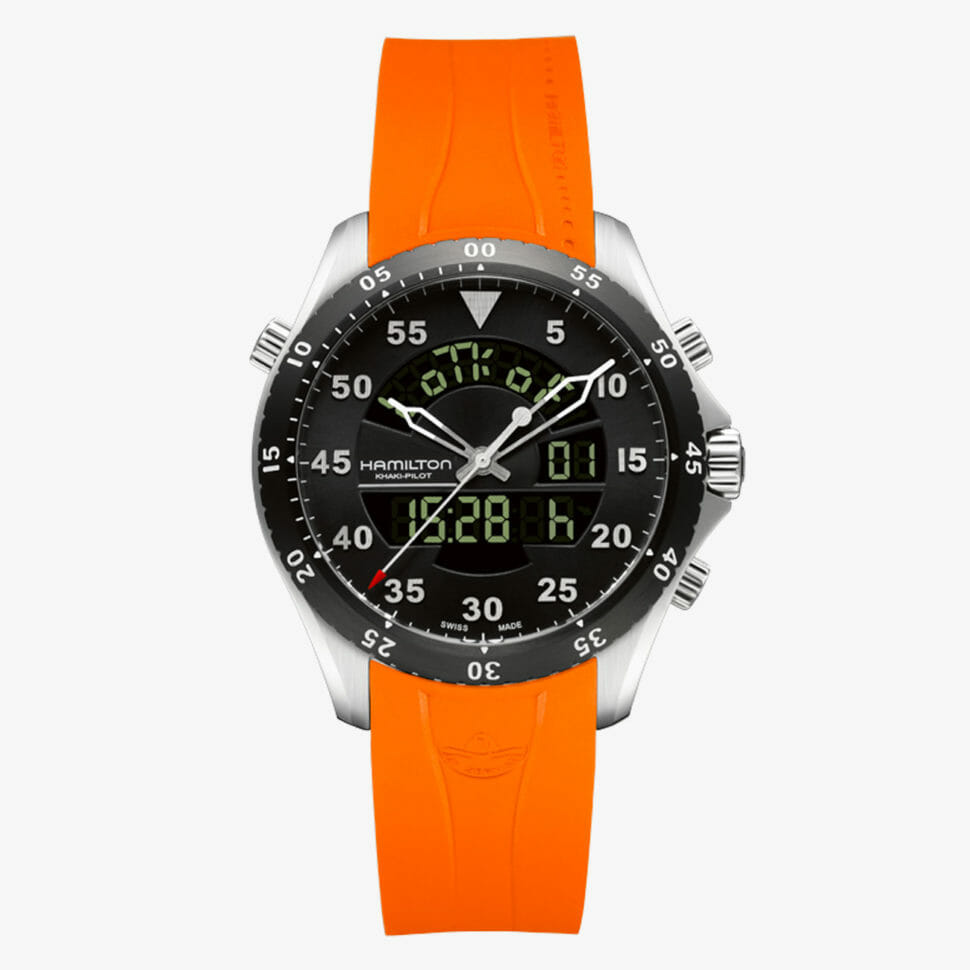
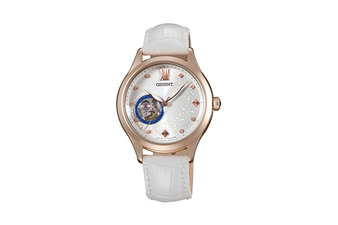

Timepieces
A collection of watches
The Working of a Watch
Thomas Earnshaw
"Watches are about
status" ~ J. Balvin
Longtitude Shadow
The image above is of a ‘skeleton watch’. The spinning mechanism in such ‘naked’ watches partly reveals how a watch operates. At the core of traditional watches lies a spring that is wound in a circle. When the spring releases tension, it sets the watch in motion.
Link for referenceRoyal decoration & desirability
Patek Philippe
Calatrava Haute Joaillerie in blue
"A watch can bring
out the best in us"
Traditionally, watches required a high level of craftsmanship and time to be made. It made portable timepieces scarce and expensive. With their history of high demand, many watches are decorated with expensive gemstones and precious metals.
A beautiful example is this 18k white gold watch. The cover is made of sapphire crystal, has been inlaid with a multitude of diamonds and has been finished with an alligator-skin wristband.
Mass production
Casio
A168WA
On the flipside of expensive, decorative, labour-intensive and one-of-a-kind watches is the world of mass-produced watches. During the Japanese Miracle (1980s), brands such as Casio and Seiko sold watches all across the world.
Timepieces such as the one we see above, simultaneously mark a strong development in watch-making: the advent of completely digital watches. This development still carries on as smartwatches continue to be improved; some even function as fully-fledged GPS-devices.
Ana - Digi
Hamilton
Flight Timer Quartz
Certain watches combine the old watchmaking world with the new: these are called ana-digi (analogous & digital).
Link for referenceOpen Heart
Orient
Model DB0A008W
In resemblance with skeleton timepieces, watches with an ‘open heart’ expose part of their internal mechanics. You could view this as a traditional way for the watchmaker to proudly reveal the work. Despite modern developments and the rise of mass-produced pieces, you could (optimistically) argue that suchlike passion has remained the beating heart of the watchmaking industry.
Every company manifests its take on design, art, quality and technique in its own way. On the customer’s part: some continue to wear their favourite timepiece daily and thereby make it a persistent asset in the way they present themselves.
See Also